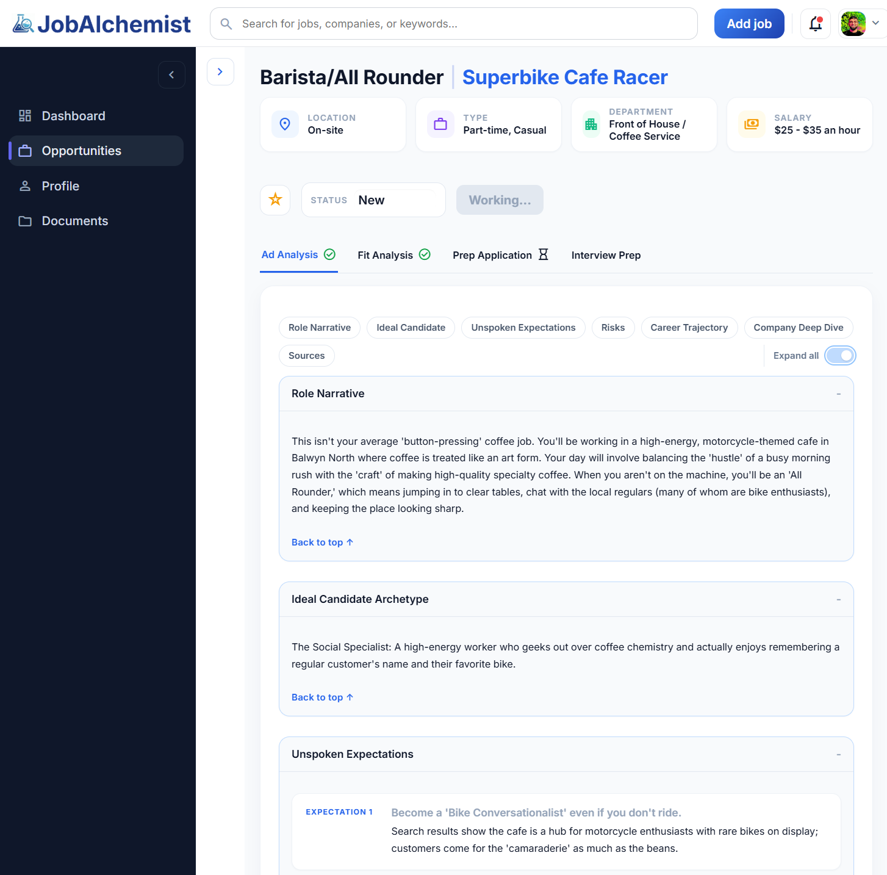
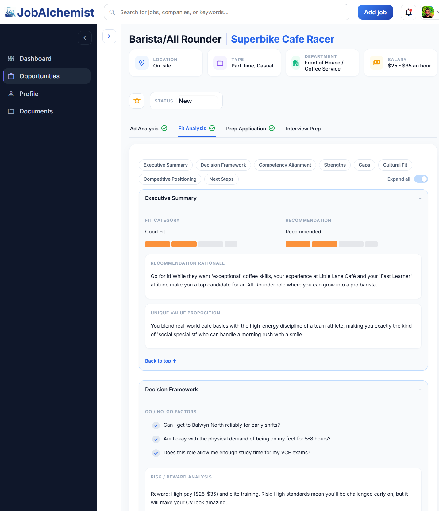
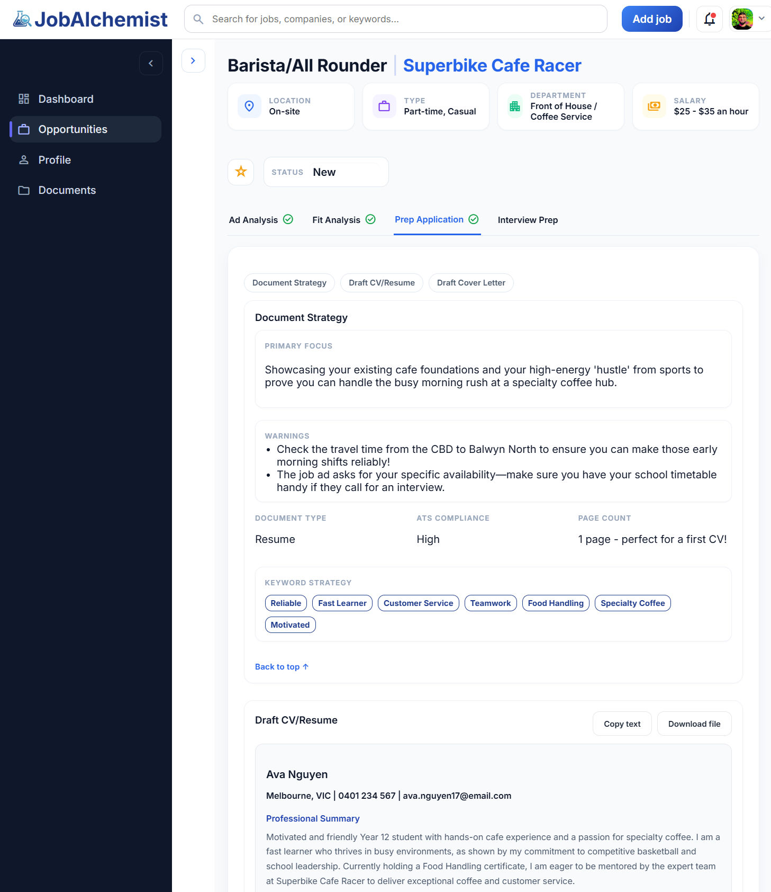

It finds the experience you didn't know counted
School leadership, sport, volunteering, part-time work, projects, these all matter to employers. The analysis is designed to surface what you already have, not just flag what's missing.
Paste the job ad and upload your CV. JobAlchemist shows what the role really needs, where your experience already fits, including school, sport, and volunteering, and how to tailor your CV and cover letter with clear guidance at every step.
Analyse up to 3 roles end-to-end. No credit card required.
Most tools will tell you what you want to hear. This one is designed to do something harder, and more useful.
School leadership, sport, volunteering, part-time work, projects, these all matter to employers. The analysis is designed to surface what you already have, not just flag what's missing.
You don't just get a score. You get practical guidance: how to read the job ad, what to strengthen in your CV, and how to talk about your experience in a way that lands. Every change comes with a reason.
If a role requires a driver's licence and you don't have one, it will say so. If the fit is weak, you'll know before you invest the time. Honest feedback is more useful than hype, especially when you're just starting out.
Three real examples from the app, so you know what to expect before you start.

Job ads are written for experienced people and can feel confusing. JobAlchemist translates them into plain language so you actually know what you're applying for.

See what you already bring to the role, what to show more clearly, and where you can still apply even if you don't tick every box. School, sport, and volunteering all count.

Get a tailored CV and cover letter with a clear explanation of every change, so you understand what was adjusted and why, not just copy-paste a result.
A clear four-step process from job ad to application draft, with honest fit insight in between.
Job ads are often vague, or written for someone with more experience than you have.
We break down what the employer is really asking for, the kind of person, the day-to-day work, and whether it's worth your time.
This is where most people get stuck: "I don't have enough experience."
We look at your real experience, school, sport, part-time work, volunteering, projects, not just formal job history.
You'll see exactly where you match and where you don't, so you can decide whether to apply and how to make your case.
We generate a tailored CV and cover letter for the specific role.
No corporate-speak. No generic templates.
Just clearer applications with a plain-English explanation of what changed and why, so you can own it in an interview, not just submit it.
Every job, fit check, and draft stays connected.
So when you come back to a role, or apply to ten of them, you don't lose track of what you changed, what you learned, or which version you sent.
For students applying deliberately: understand your fit first, then send stronger applications.
Your time is finite. Not knowing where you stand before you apply is expensive.
If you've spent hours on an application and heard nothing back, this tells you what to do differently, before you invest the time.
You have more to offer than you think. It just doesn't map neatly to the job ad.
School, sport, volunteering, and part-time work all count as real experience when they're relevant. We help you see where, and how to say it clearly.
It will tell you something the silence won't.
Whether you're applying for your first job, an apprenticeship, or a trades role, you get an honest picture of where you stand and what to do next.
JobAlchemist is great fit for the Gateway programmes in New Zealand. If you're a careers teacher or coordinator looking for something you can show students with confidence, here's what you need to know.
The analysis is built to surface relevant experience from school, sport, volunteering, and projects, not just flag the absence of formal work history. Students often come away surprised by how much they already have to offer.
Every fit assessment includes practical guidance: how to interpret the job ad, what to strengthen in a CV, and how to frame experience in a way that's relevant to the role. Students aren't just handed a draft, they learn something from the process.
If a role requires a driver's licence and the student doesn't have one, the tool will say so. If the fit is genuinely weak, it says that too. In an educational setting, false confidence creates bigger problems down the line. Students can handle honesty when it's delivered clearly and supportively.
When a student signs up, the platform calibrates its output: simpler language, more explanation, more encouragement. No configuration needed from you. It works for Gateway, careers class, or direct student use.
School and cohort access is handled separately from individual signups. Get in touch to discuss what the right setup looks like for your students and programme.
Get in touch about school access →Student questions
That's exactly what this is built for. We look at your real experience, school responsibilities, sport, volunteering, part-time or casual work, and projects, and show where it's relevant to the role. Not having a formal work history doesn't mean you have nothing to offer. It just means you need to show it differently.
Yes. Retail, hospitality, babysitting, lawn mowing, anything where you showed up and did a job, it counts. We help you frame it in a way that's relevant to the role you're applying for.
Yes. The analysis works for any role with a job ad. Whether you're applying for a trade apprenticeship, a hospitality position, a retail role, or an office job, the process is the same.
No, and this matters. The drafts are built around your actual experience, not a generic template. You also see a plain-English explanation of every change, so you understand it and can talk to it in an interview. If something doesn't sound like you, you change it. The goal is a stronger version of your voice, not a replacement for it.
Usually a few minutes once your CV is uploaded. The full workflow, job analysis, fit check, and tailored drafts, can be done in a single sitting.
You can analyse up to 3 roles end-to-end for free, no credit card required. That covers the full workflow: job ad analysis, fit check, and tailored CV and cover letter drafts. After that, there's a paid plan if you want to keep going.
A CV, even a basic one, and a job ad you want to apply for. That's it.
For teachers and schools
Yes. The platform detects student accounts and adapts automatically, simpler language, more supportive framing, and output calibrated for applicants with limited work history. It's designed for Year 12 and 13 students and is currently being introduced to NZ schools through a Gateway programme partner.
Students can sign up individually for free right now. For school-wide or cohort access, including managed setups for Gateway or careers programmes, get in touch via the contact form to discuss what's right for your context.
Yes. Each student has their own account and only ever sees their own data. We use Supabase with row-level security, and all data is encrypted in transit and at rest. We do not sell or share data with third parties.
Not currently, there's no teacher dashboard. Each student account is private to them. If teacher-facing visibility is something you need for your programme, mention it when you get in touch and we can discuss what's possible.
The workflow maps well to a structured class session: students bring a job ad, work through the analysis, review their fit, and produce draft application materials. JobAlchemist is currently being introduced to Gateway programmes in New Zealand. Get in touch to talk through how it could work in your programme.
For students
No credit card. No setup. Just upload your CV and a job ad and see where you stand.
Try it free →For teachers & schools
Gateway programmes, careers classes, cohort access, we'll find the right setup for your students.
Get in touch →{kind=link}
{kind=link}
{kind=link}